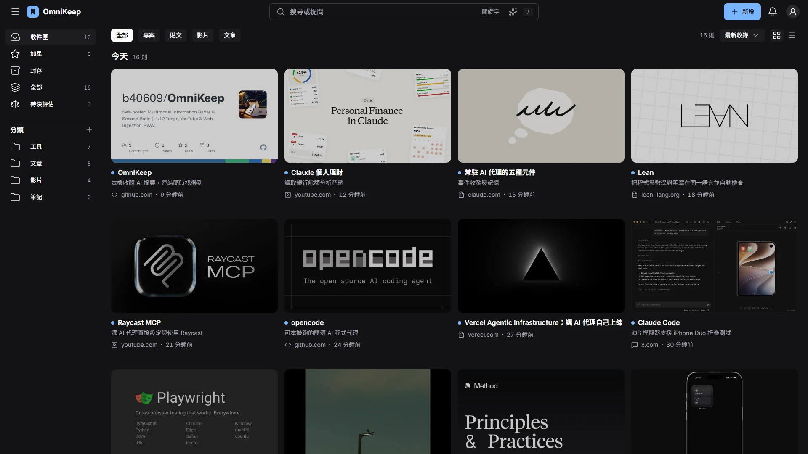
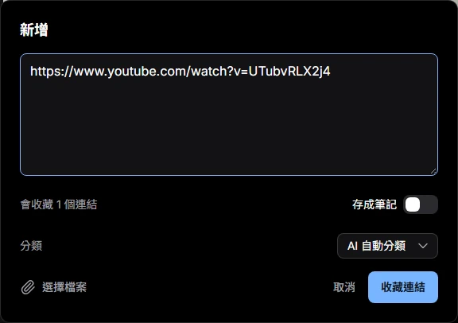
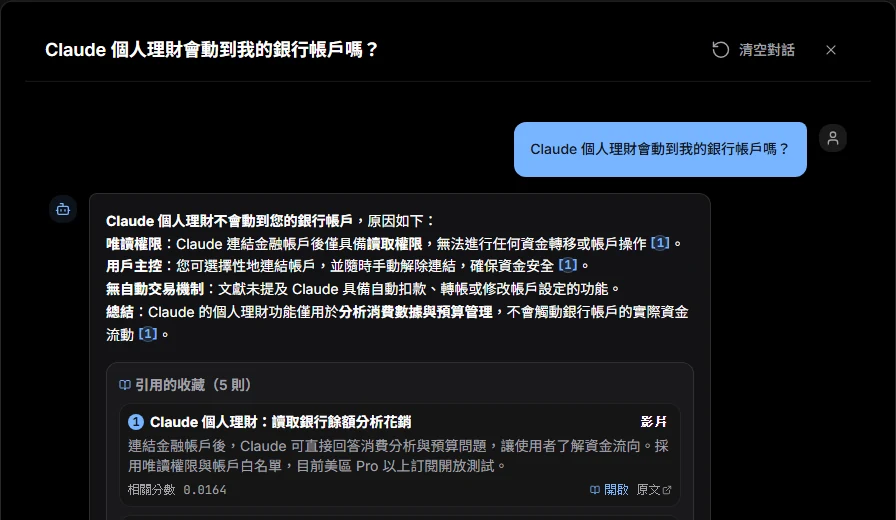
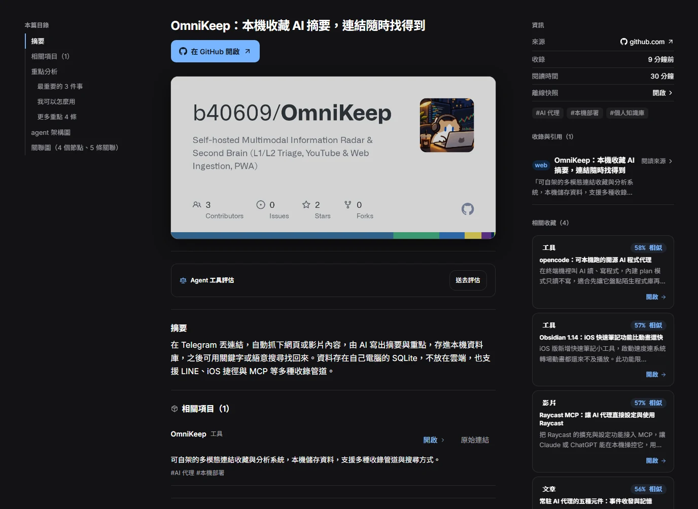
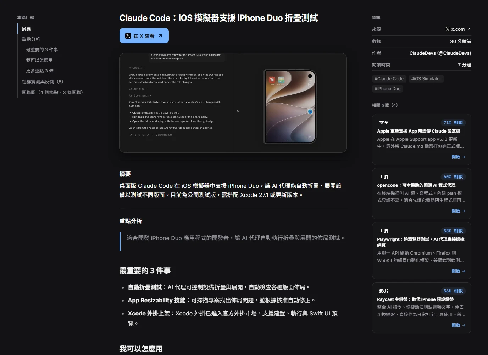
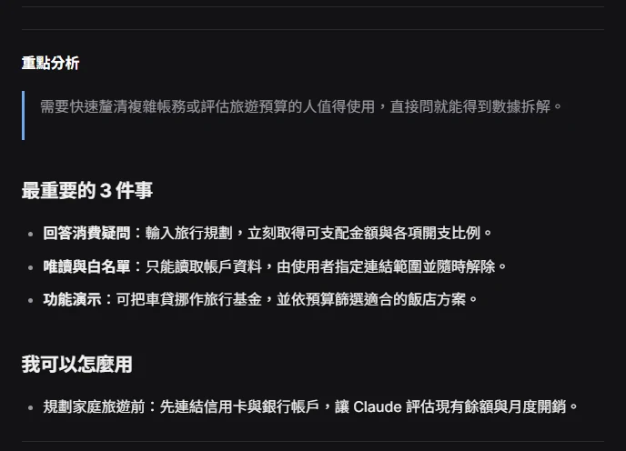
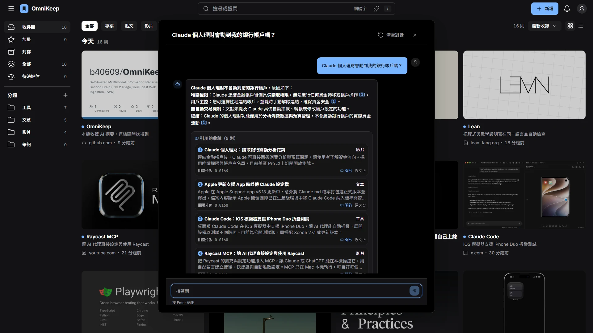
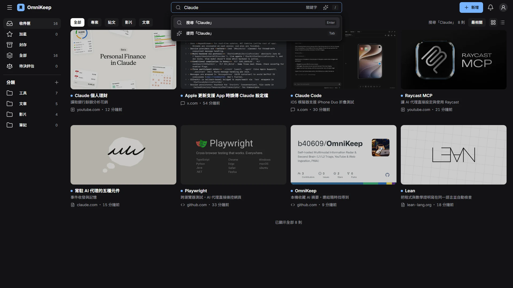
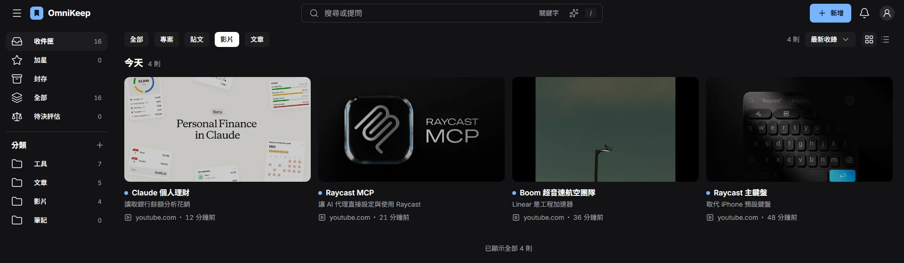

主要入口
Telegram 機器人
用一次性配對連結綁定你的帳號。傳連結過去，處理完它會回一張有摘要的卡片。
OmniKeep
把連結傳給自己的機器人，網頁、影片與社群貼文都幫你讀完寫好摘要；
之後用搜尋或提問就找得到。
自架・開源 MIT・Windows、macOS、Linux・資料存本機

怎麼運作
看到值得留的連結，收了常常就沒再看，要用的時候也找不到。OmniKeep 主要做一件事，分成三步：丟連結、幫你讀完、找得到。

在 Telegram 把連結傳給自己的機器人；在電腦前，就按頂部的「新增」貼上。
網頁、影片（YouTube、Bilibili、短影音）、社群貼文（Threads、X）都會抓下內容，交給你接上的 AI 寫出摘要與重點。

用關鍵字或語意搜尋，或直接在搜尋框提問，回答會附上引用的收藏。
收錄
Telegram 是主要入口，把連結傳給自己的私人機器人，收錄後回覆摘要卡。其他管道，依你的習慣挑。
主要入口
用一次性配對連結綁定你的帳號。傳連結過去，處理完它會回一張有摘要的卡片。
同樣是轉發連結就收錄，支援長文與 Flex 訊息卡回覆。
一個面板，貼連結、寫筆記、把書籤檔拖進來都從這裡。
iOS 原生捷徑（Share Sheet）一鍵收錄，或把 PWA 加到主畫面獨立操作。
同一台電腦用 stdio，別台電腦用 Streamable HTTP（經 Tailscale）。安裝腳本會自動註冊到 Claude Code、Codex、Antigravity。
內建 Swagger 文件，方便腳本與自動化流程串接。
讀取
不是只存網址。每一種內容用適合它的方式讀，沒字幕的 YouTube 也轉成逐字稿，帶 [MM:SS] 時間與章節。


YouTube
主機不用下載。沒有 Gemini 時讀字幕，沒字幕就用本機語音轉錄（中文用台灣華語微調的 Breeze-ASR-25）。選裝畫面 OCR 後，再補上投影片、圖表上旁白沒講到的字。
Bilibili 長影片
先用官方 CC／AI 逐字稿 JSON，沒有時改抓 DASH 音訊，交給本機 faster-whisper 轉錄（GPU／CPU 自動切換，選用安裝）。
Reels・TikTok・Shorts
關鍵幀 OCR 加語音轉錄（本機或雲端），兩邊的文字合併後再分析。
Threads・X
抓下貼文正文與附圖，交給你接上的 AI 寫出摘要與重點。
長文
用 trafilatura 清掉廣告與雜訊，並存一份 HTML 快照；原網頁失效後仍然看得到。
摘要
卡片上是一個說重點的標題、一句白話說明，以及來源與收錄時間。
重點分析
打開收藏可以看完整的分析（最重要的 3 件事、我可以怎麼用、架構與關聯圖），以及 Markdown 原文閱讀模式。

找得到
頂部只有一個搜尋框，搜尋、提問、篩選都在這裡。提問時先檢索相關的收藏，再交給 AI 回答，回答裡附上引用的來源編號。



SQLite FTS5，用 trigram 分詞，中文句子裡的子字串也找得到。
sqlite-vec 向量索引，和全文檢索的結果合併，關鍵字對不上時也找得到相關內容。
直接對收藏的內容提問，回答附上引用的來源編號。
資料在自己手上
資料存在你自己的電腦上（SQLite），不放在別人的雲端，每天自動備份。
127.0.0.1
服務只綁本機位址，別台裝置連不到。要讓手機用，走 Tailscale 這類私有網路，一律要存取金鑰或一次性配對碼。
每天
本機多份輪替、雲端同步（rclone：Google Drive／Dropbox／S3），或私有 Git 儲存庫自動提交。資料庫與 HTML 快照一起備份。
末四碼
在 App 內輸入的金鑰會加密後才存進資料庫，之後只顯示末四碼。
SQLite
WAL 模式。全文索引是 trigram 分詞的 FTS5，向量索引是 sqlite-vec。用 scripts/restore_backup.py 還原。
AI 連線
支援 OpenAI 相容（/v1）、Google Gemini、本機 Ollama 三種協定。分析、提問、語意搜尋、影片各排一串連線，第一條是主要，其餘依序備援。儲存後立即生效，不必重啟。
稍後讀服務Pocket、Omnivore
服務可能終止，資料綁在廠商的雲端，而且多半只保存文字。
筆記工具Notion、Obsidian
收錄流程比較繁瑣，影片（YouTube、Bilibili、Reels）不會自動整理成文字與重點。
實驗功能
新安裝預設關閉，在「設定 › 實驗功能」開啟。介面與行為之後還會改。
定時檢查你加的探索來源（RSS、YouTube 頻道、GitHub 專案、Google News 關鍵字、網頁變動），每輪只挑分數最高的幾篇做 AI 分析，整理成精選。
預設不通知；可以改成每日精選，或只在分數到門檻時通知。
一則一則決定要不要留，喜歡、不喜歡會調整標籤的權重，影響之後的排序。
依最近的互動提議更新興趣描述，你同意才套用。目前只能手動觸發。
掃描你指定的本機資料夾，產生風險與改進的建議。
每天挑幾則未讀和值得重看的舊收藏，一則一則看過。
開始用
需要 git、Python 3.12+、Node.js 20.19+ 或 22.12+。不用先申請 AI 金鑰：安裝後會自動接上不用註冊的免費 AI 服務。
1 安裝
對 Claude Code、Codex 或 Antigravity 說這句話，agent 會裝好，再帶你接上 AI、接上 Telegram、丟第一個連結。金鑰與機器人權杖一律在 OmniKeep 的設定頁自己貼，不經過聊天。
幫我安裝 OmniKeep：https://github.com/b40609/OmniKeep
或自己執行安裝腳本
# Windows（Windows PowerShell 5.1 或 PowerShell 7）
& ([scriptblock]::Create((irm https://raw.githubusercontent.com/b40609/OmniKeep/main/scripts/install.ps1).TrimStart([char]0xFEFF)))# macOS、Linux
curl -fsSL https://raw.githubusercontent.com/b40609/OmniKeep/main/scripts/install.sh | bash2 打開
在這台電腦用瀏覽器打開 http://127.0.0.1:5000。第一次會出現「歡迎使用 OmniKeep」：AI 已接好 → 接上 Telegram → 丟第一個連結。
3 接上 Telegram
在 Telegram 找 @BotFather 傳 /newbot 拿到權杖，貼到「設定 › 收錄管道 › Telegram」，再按「產生配對連結」用你的 Telegram 開啟。
4 丟第一個連結
處理完機器人會回一張有摘要的卡片。或在 OmniKeep 按頂部的「新增」（快捷鍵 N）貼上。
還沒接上 AI 也能收藏：卡片標示「尚未分析」，接上之後在背景自動補分析。Docker 與自己一步一步裝的方式，見 README 的進階一節。
不用。安裝後會自動接上不用註冊的免費 AI 服務，想更好再到「設定 › AI」升級。就算一個 AI 都沒接上，連結也照樣收藏，卡片標示「尚未分析」；之後接上連線，會在背景自動補分析。
Telegram 機器人在手機、電腦都能用。要在手機打開 OmniKeep 的網頁介面，走 Tailscale 這類私有網路連回執行 OmniKeep 的電腦，用存取金鑰或一次性配對碼登入；也可以用 iOS 捷徑從分享表單一鍵收錄，或把 PWA 加到主畫面。
可以。按頂部的「新增」，把瀏覽器匯出的 HTML 書籤檔拖進去，選「只匯入，不分析」或「匯入後交給 AI 分析」。
有，適合已經在用 Docker 的主機。Docker 版不支援「agent 帶著設定」，AI 連線、Telegram 都要在網頁的設定頁自己設定，而且一律要存取金鑰登入。一般桌機建議用一行安裝。
對 agent 說「更新 OmniKeep」就好（2026-11-12 之前安裝的，要附上 GitHub 網址，請它照 README「更新到新版」一節做）。想自己來，README 列了步驟：先備份資料庫、git pull --ff-only、重跑安裝腳本；重跑安裝腳本不會動 .env 與資料。